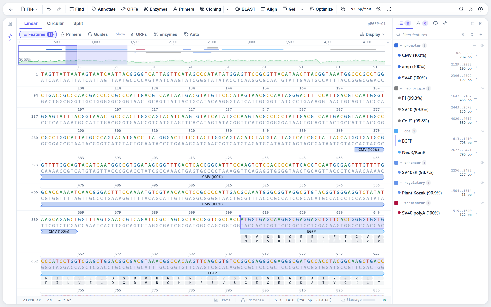

A sequence editor built for long sequences.
DNA and protein in a canvas-rendered view that stays quick from a 20 bp oligo to a bacterial genome. Type, paste and delete in place, select several ranges at once, and read the translation, the complement and the melting temperature of whatever is selected.

- Genome scale. Tested to around 5 Mb; the canvas draws only what is on screen.
- Three zoom modes. Line, dots and letters across 21 levels, with linear, circular and split views.
- Several ranges at once. Ctrl-drag or Ctrl-click features; touching ranges merge and are copied, translated and annotated joined, as exons are.
- Inline editing with undo. Insert, replace and delete in place; features move with the sequence.
- Command palette and shortcuts. Every action reachable from the keyboard.
- Ten themes. Five light and five dark, with the sequence colours adjusted for each.